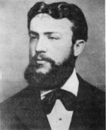
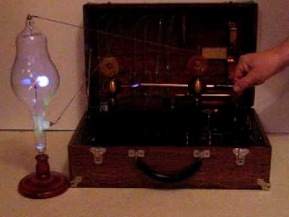
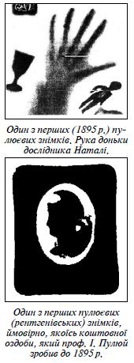

Education
He finished primary school in Hrymailiv and entered the Ternopil classical school, where together with his brothers Alexander and Vladimir Barvinsky became co-founder and an active figure in the secret society of Ukrainian Youth "Hromada".
These are the Organizations at the time gained considerable popularity in Galicia, adopting the baton from the "community" that emerged in many cities in Dnieper Ukraine. Ternopil class - "Hromada" was about three times a week in the afternoon
session on the theme: Wednesday (story), Saturday (literature) and Sunday (recitation and reading the word of God). The great influence on high school youth had the poetry of Taras Shevchenko.
After graduating from high school in 1865 Puliuj was already formed personality, a patriot who knew the purpose of his life and knew what to do for her comprehension. Telling fact: while still a student of the first year, he translated the
Ukrainian language textbook on geometry for Ukrainian schools, though at the time such was not. The same Puliuj 1865 Ivan joined the Greek Catholic Seminary in Vienna, where he combined training with religious literature translated into
Ukrainian and on this occasion in 1869 first met Panteleimon Kulish in Vienna. In 1868, together with other students of Ukrainian hromada-men founded in Vienna legitimate student society "Sich", an activity which was later praised by Ivan
Franko.
In the last year of studies at the seminary Puluj attended lectures in mathematics, physics and astronomy at the University of Vienna. These sciences as it took, he decided not pursue his plans to become a priest and become a student of the
Faculty of Philosophy of the University. Training lasted for years 1869-1872, and in 1872-1874 he. Puluj already working scientist in the physics laboratory of Professor von Lange. In 1874 published his first two articles devoted to the
experimental study of internal friction depends on the air temperature in the journal "Reports of the Vienna Academy of Sciences."
In 1874-1875 he lectured physics, mathematics and mechanics at the Naval Academy in Fiyume (now Rijeka, Croatia). They constructed a device for measuring the mechanical equivalent of heat, which became widely known in the scientific world
and in 1878 was awarded a silver medal at the World Exhibition in Paris. In the years 1875-1876 Puluj as fellow Austrian Ministry of Education studied and worked at the University of Strasbourg, in the Physics Institute Professor August
Kundt. In 1876 he defended his thesis "The dependence of internal friction gas temperature" and received his Ph.D. University of Strasbourg.
Returning to Vienna in the years 1876-1883 worked as an assistant and personal assistant to a professor at the University of Vienna. In 1880-1882 years in the "Report of the Vienna Academy of Sciences" were published four important articles
Puluj devoted cathode rays, which have considerable resonance among physicists. In the same period is the beginning of active work Puluj a new industry - electrical engineering. In 1881 at the World Exhibition in Paris electrical Puluj
electric apparatus designed awarded diplomas.
After an electrical exhibition in Vienna in 1883 Puluj inventions aroused great interest, resulting in his invitation Verndlem known businessman, the owner of knowledge in Europe firms to move to the city of Steyr (Austria). Therefore, in
the years 1883-1884 in Steyr Puluj worked as a consultant and director of the factory bulbs own design, with electrical ensured great success of the exhibition, held in the city in the summer of 1884. Do not slow down the recognition of
its achievements and at the government level - at the invitation of the Ministry of Education Puluj Austria-Hungary in the autumn of the same year he was appointed Professor of Experimental Physics and Technology of the German Higher Technical
School in Prague. Here he began to read besides physics lectures with individual courses of electrical engineering, has developed a systematic plan for the organization of relevant studies in the Prague Polytechnic. In the 1888-1889 academic
year, Puluj was elected Rector of the Polytechnic, and in 1890 - the dean of engineering faculty.
Special for Puluj was the beginning of 1896, when he conducted fundamental research on the nature and properties of the newly opened X-rays, results of which are published in two articles in the "Report of the Vienna Academy of Sciences."
In the 90 years of the nineteenth century. Puluj played a crucial role as head of the design and construction of many power alternating current in the Czech Republic. The quality of the projects and their implementation were very high,
in compliance with the environmental requirements of even the current level (as, in particular, the residents of Prague still use electricity, which makes them "Puluj" power plant). In 1902 he founded and headed the department of electrical
engineering. On the occasion of the 100th anniversary of the German University of Technology in Prague Puluj noted the Order of the Iron Crown on his research and teaching work (1906). He also received the Cross of the Order of Franz Josef
and the high court title Counsellor (1910). In 1913 Ivan Puluj elected an honorary member of the Vienna Electrotechnical Society. In 1916 Puluj received a proposal to take the post of Minister of Education of the Austrian monarchy but
declined for health reasons. The same year he retired.
The multifaceted work of Ivan Puluj is not limited to his official work in the above institution.
Family
1884 Puluj married to Catherine Joseph-Marie Stozitskoyu (1863-1945) - a student of the University of Vienna. The marriage took in the Greek Catholic Church of St.Barbara in Vienna. The family had grown six children, three daughters and three
sons, Natasha (born 1886) was a pianist and wife of the famous Ukrainian composer Basil Barvinsky; Olga (1891 born) and Mary (1894 born) became a teachers; Alexander (born 1901) and George (Georg 1906 born) became an engineers, and Paul
(1904 born) was a doctor.
As in Prague, there was no Ukrainian schools, the summer months Puluj hired teachers for their children Ukrainian language, giving relevant ads to Lviv newspaper "Delo". Paul and George, after his father's death, studied in Lviv Ukrainian
school. The eldest son, Alexander went to the bench seventeen volunteer Cossack riflemen and until 1920 took part in the fighting Ukrainian Galician Army.

Scientific Contribution
Puluj did heavy research into cathode rays, publishing several papers about those rays between 1880 and 1882. In 1881 as a result of experiments into what he called cold light Prof. Puluj developed the Puluj lamp; it was awarded the Silver
Medal at the International Electrotechnical Exhibition in Paris. Throughout the world, it has become known as the "lamp of Puluj" and even it was mass-produced for some time.
 Puluj experimented with his new device and published his results in a scientific paper, Luminous Electrical Matter and the Fourth State of Matter in the Notes of the Austrian
Imperial Academy of Sciences (1880–1883), but expressed his ideas in an obscure manner using obsolete terminology. Puluj did gain some recognition when the work was translated and published as a book by the Royal Society in the UK.
While Puluj's finding were essentially X-rays, he did not recognize them as such at first. This credit would later go to Wilhelm Conrad Röntgen. Puluj continued to do research with his X-Ray tubes. On 8 February 1896, just 6 weeks after Röntgen
presented his finding of X-Rays, Puluj published his own findings in the French magazine La Nature in Paris. His presented photographs included the skeleton of a stillborn child. His work was republished in various European science magazines.
Puluj would release further images of human body parts, including an image of a fractured human hand, and would suggest possible medical usages of this new technology.
Puluj made many other discoveries as well. He is particularly noted for inventing a device for determining the mechanical equivalent of heat that was exhibited at the Exposition Universelle, Paris, 1878. Puluj also participated in an opening
of several power plants in Austria-Hungary.